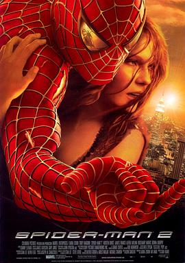

7.9
蜘蛛侠2
Spider-Man 2
2004
美国
评分 7.9
导演:
山姆·雷米
演员:
托比·马奎尔 / 克斯汀·邓斯特 / 詹姆斯·弗兰科 / 阿尔弗雷德·莫里纳 / 罗斯玛丽·哈里斯 / J·K·西蒙斯 / 唐纳·墨菲
类型:
冒险,动作,科幻
剧情简介
蜘蛛侠的身份让彼得·帕克的生活变得支离破碎。他在大学课业、兼职工作和身为英雄的职责之间疲于奔命，每一次见义勇为都让个人生活更加混乱。彼得深深爱着玛丽，却为了保护她的安全而选择保持距离，这种矛盾情绪不断撕扯着他，使他在责任与渴望之间摇摆不定。与此同时，好友哈利因父亲的死亡将怒火指向蜘蛛侠，让彼得在友情中也难寻平静。此时，城市迎来新的威胁——天赋异禀的科学家奥托·奥克塔维斯在实验事故中失去控制，机械触手与他的神经相连，使他从卓越的学者变成无法抑制的“章鱼博士”。他的理智被权力和执念蚕食，对危机的追求让整座城市陷入危险。彼得在能力失常的挣扎中甚至一度放弃蜘蛛侠身份，希望找回简单的生活，但灾难逼迫他重新审视自己存在的意义。面对章鱼博士的破坏，他必须再次穿上战衣，用智慧和勇气迎战这位曾经敬仰的导师。在与反派的周旋中，彼得逐渐明白力量从来不是负担，而是对他人的承诺。影片通过激烈动作场面与情感深度相结合，展现了英雄在人性与责任间的艰难抉择，也让蜘蛛侠的成长更加真实动人。